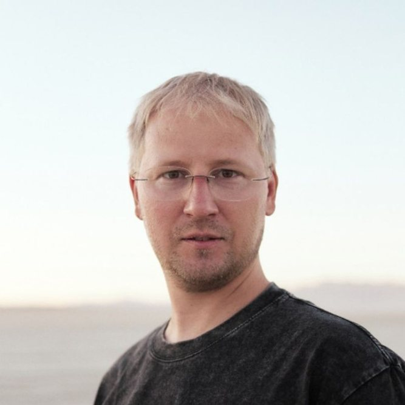
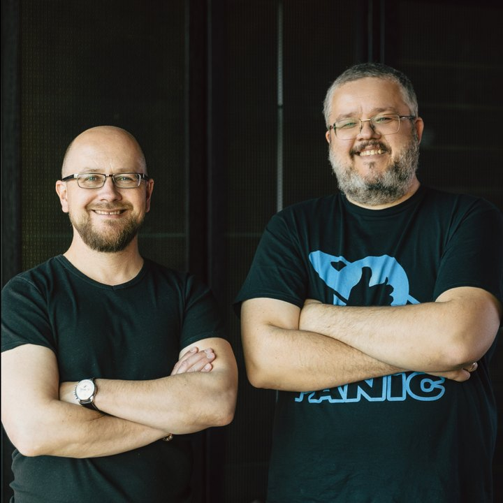
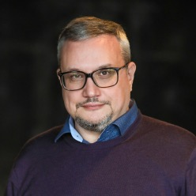

Спикеры конференции

Илья Летунов
manaraga.ai
Честно про AI: что работает, а что остается пилотом

Сева Устинов
Plurio.AI
Агенты и вайбкодинг в управлении

Орлов и Панкратов
Стратоплан
Пересборка среднего менеджмента под ИИ

Ильяна Левина
METTA
Как внедряем ИИ-культуру в международной tech health компании
Александра Клименко
Soft Skills Lab
Навыки руководителя в работе с сопротивлением

Павел Алферов
Школа управления Сколково
Управление в условиях ограничений

Алексей Корсун
Т-Банк, Авиасейлс, SemRush
Где теряется время: все заняты, а сроки горят
Илья Прахт
CTO-консультант, Стратоплан
Полторы ставки директора на созвоны

Иван Замесин
Advanced JTBD, «Мета»
Что делать, когда падает выручка
Состав расширяется — новых спикеров анонсируем ближе к событию, среди них эксперты Авито